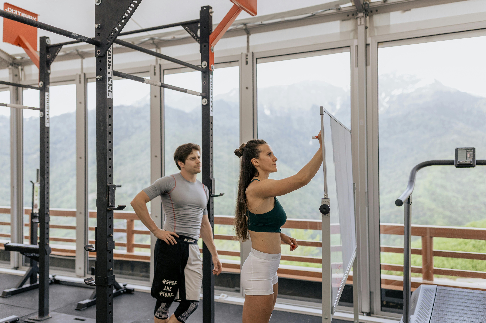

Nuestra sección de Coaching te ofrece un acompañamiento personalizado para alcanzar tus metas de fitness y bienestar.
Premium Coaching
Disfruta de la privacidad de un estudio de entrenamiento completamente equipado. Esto atrae a dos tipos de clientes:
- Clientes que carecen de confianza y pueden sentirse ansiosos en un entorno de gimnasio comercial sin supervisión de un entrenador personal.
- Clientes específicos para deportes que requieren toda nuestra atención para trabajar en un objetivo específico.
Recibirás un apoyo constante en tu entrenamiento, tu nutrición y tu mentalidad. Si sientes que has estado dando vueltas en círculos y no has avanzado, te recomendamos un plan de coaching estructurado.
Durante una sesión privada en el estudio con tu entrenador, trabajarás en la planificación estratégica, la creación de un plan, la resolución de problemas y la superación de obstáculos durante tu viaje de fitness.
Aquí tienes una lista de lo que obtendrás en tu plan premium:
- Evaluación nutricional y plan estructurado, desarrollado a partir de un análisis de tu estilo de vida.
- Coaching uno a uno en el estudio (horarios estructurados durante la semana).
- Revisiones de progreso.
- Apoyo y orientación en cada paso del camino.
- Acceso a tus entrenamientos a través de una aplicación guiada.
Coaching Semiprivado

El Coaching Semiprivado es una forma emocionante de entrenar que involucra a un pequeño grupo de personas. Este entorno de grupo te inspirará a seguir adelante cuando sea difícil y reducirá el costo por persona, haciéndolo más accesible económicamente.
Serás guiado a través de tu programa en un pequeño grupo de personas con objetivos similares, cada uno con un programa diseñado específicamente para ellos. Es una combinación perfecta de entrenamiento personal y comunidad que fomenta la autonomía y el compañerismo.
Obtendrás un programa personalizado basado en tus metas y nivel de fitness. A través de la camaradería con personas afines, te mantendrás en el camino hacia tus objetivos y tendrás supervisión dedicada de tu entrenador.
Gracias al entorno de grupo, tendrás acceso a varias sesiones de entrenamiento a la semana, lo que te permitirá mejorar técnicas o acelerar tus objetivos.
Coaching en Línea

Nuestro coaching personal en línea es ideal para personas que desean obtener el máximo retorno de sus esfuerzos de entrenamiento desde la comodidad de su hogar.
Nuestra guía y conocimientos garantizan que tengas un entrenador experto contigo en cada paso del camino, brindándote resultados consistentes y guiados.
Lo que recibirás:
- Un plan de transformación: una videollamada con tu entrenador para discutir tu historial completo de fitness y tus objetivos futuros. Juntos, crearán un plan para visualizar tu camino hacia el éxito.
- Un programa de coaching personalizado: un plan que garantiza que alcances tus objetivos, teniendo en cuenta tu estilo de vida.
- Acceso a tu propia aplicación: una aplicación con inicio de sesión personalizado, a través de la cual se entregarán todos los entrenamientos.
- Supervisión constante: reuniones semanales con tu entrenador para resolver cualquier problema y hacer ajustes en tu plan.
Los resultados que puedes esperar:
Independientemente del equipo que tengas disponible, tu entrenador acelerará tus resultados con orientación y apoyo. Recibirás las herramientas para alcanzar los objetivos que te has propuesto.